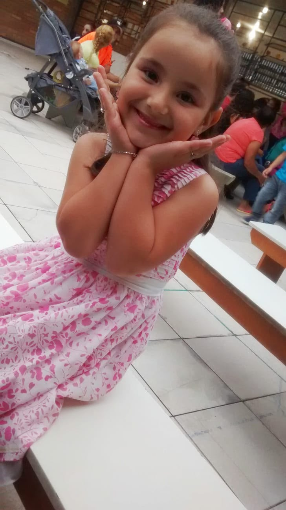

2014
O Prezinho
↻ Puxe o fio
2014
O Prezinho
Naquele primeiro dia, o vestido rosa de florzinhas foi o que me deu coragem de atravessar o portão. Fiz pose com as mãos no rosto, mas o coração batia rápido. Foi ali que aprendi a escrever meu nome, dividir o lanche e fazer as primeiras amizades. Até hoje sinto o cheirinho de cola bastão quando lembro daquela manhã.
↺ Costurar de volta